Bifurcations and synchrony in a network of delayed Wilson-Cowan nodes
Jonathan J Crofts
Nottingham Trent University
8th May 2024
Outline
- Introduction and Motivation
- A Brain Network Model
- Bifurcation Structure of the Synchronisation Manifold
- The Effect of Network Structure and Time Delay on Patterns of Synchrony
- Concluding Remarks and Future Work
Connectivity: why do we care?
Clinical measurements
- White + grey matter connectivity is thought to form the substrate for many different neurological and pyschiatric disorders
- Modern MRI techniques allow in-vivo measurements specific to different connections
Example Axonal degeneration/demylination in Multiple Sclerosis (Evangelou et al. 2000)
Left: control Right: MS
Connections constrain function
- Operations performed by an area are determined by its connectivity
- Different regions have distinct connectivity fingerprints
- Understanding regional connectivity is essential to understanding systems neuroscience
Investigating Brain Connectivity
Diffusion-weighted MR imaging obtains similar pictures in vivo
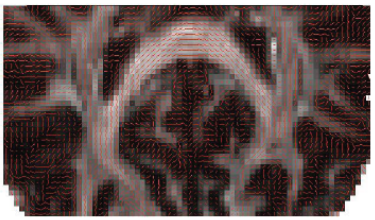Sacraficial tracer studies carried out on primates represent the gold standard
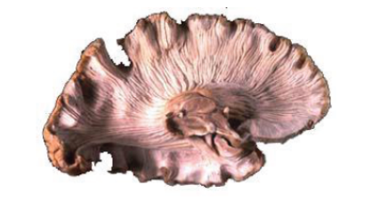Tractography algorithms construct a vector field describing the connectivity structure
Outline
- Introduction and Motivation
- A Brain Network Model
- Bifurcation Structure of the Synchronisation Manifold
- The Effect of Network Structure and Time Delay on Patterns of Synchrony
- Concluding Remarks and Future Work
Networks in Neuroscience
Choices of scales determine how brain network models are built
Brain Network Models
We consider here large-scale brain network models
- DTI (or tracer) connectivity provides information about interrgional connectivity
- Euclidean distances or fibre tract length may be scaled to obtain temporal delay information
- Kuramoto model is used here to demonstrate how DTI information is incorporated into the model
- Further processing depending on whether we are modelling BOLD or EEG/MEG signals
A Model of Brain Network Activity
- To model synchrony behaviour in coupled masses, we consider a network of Wilson-Cowan nodes of the form
\[\begin{align*} \frac{\mathrm{d}u_i}{\mathrm{d}t} &= -u_i + \phi\left(au_i(t-\tau)+bv_i(t-\tau)+P+\epsilon\sum_{j}w_{ij}u_j(t-\rho)\right) \\ \frac{\mathrm{d}v_i}{\mathrm{d}t} &= -v_i + \phi\left(cu_i(t-\tau)+dv_i(t-\tau)+Q\right), ~i=1,\ldots,n \end{align*}\]
- Here, $\epsilon$ denotes the coupling strength
- And \[ \color{gray}{\boxed{\color{black}{ W = D^{-1}A\in\mathbb{R}^{n\times n} \quad \text{with} \quad D = \mathrm{diag}\left(k_1, k_2, \ldots k_n\right)}}} \] is the scaled adjacency matrix
- Recall that $a_{ij}=1$ if nodes $i$ and $j$ are connected but is otherwise zero
In our brain network model we choose the cortical structure of the Macaque monkey
- $n=47$ brain regions (nodes) which are linked by $m=313$ undirected fibres (edges)
- Binary connectivity matrix, i.e. $a_{ij} = a_{ji} = 1$ if brain region $i$ connects to brain region $j$
Simulations for varying $\epsilon$ and $\rho$
\[ R = \frac{\langle \bar{u}(t)^2\rangle - \langle \bar{u}(t)\rangle^2}{\frac{1}{n}\sum_{i=1}^n\left(\langle u_i(t)^2\rangle-\langle u_i(t)\rangle^2\right)} \]
A single Wilson-Cowan node with delay
- We consider Wilson-Cowan masses of the form
\[\begin{align*} \frac{\mathrm{d}u}{\mathrm{d}t} &= -u + \phi\left(au(t-\tau_1)+bv(t-\tau_2)+P\right) \\ \frac{1}{\alpha}\frac{\mathrm{d}v}{\mathrm{d}t} &= -v + \phi\left(cu(t-\tau_2)+dv(t-\tau_1)+Q\right) \end{align*}\]
- Parameters:
- $a, b, c$ and $d$ describe interactions between subpopulations
- $P, Q$ are basal inputs
- $\alpha$ sets the relative time scales
- $\tau_{1,2}$ represent intra-node transmission delays
- Firing rate function:
\[\phi(z) = \frac{1}{1+e^{-\beta z}} \]
- $\tau_1=\tau_2=0$
- $\tau_1=\tau_2=\tau\neq0$
chaotic behaviour
- Coupling parameters: $a = d$ and $b = c$
- Other parameters: $$\alpha=1, \beta=60 \text{ and } \tau=0.1$$
- Basal inputs $P = Q = 0.2$
- $\tau_1=\tau_2=\tau\neq0$
chaotic and quasiperiodic solutions
Outline
- A Brain Network Model
- Bifurcation Structure of the Synchronisation Manifold
- The Effect of Network Structure and Time Delay on Patterns of Synchrony
- Concluding Remarks and Future Work
Dynamics on the Synchronisation Manifold
For row normlised connectivity matrices, the coupled system of WC masses admits synchronous solutions of the form \[(u_i(t), v_i(t)) = (u_s(t),v_s(t))\quad i=1,\ldots,n\] such that the functions $(u_s, v_s)$ satisfy
\[\begin{align*} \frac{\mathrm{d}u_s}{\mathrm{d}t}&= -u_s(t)+\phi\left(au_s(t-\tau)+bv_s(t-\tau)+\epsilon u_s(t-\rho)+P\right)\\ \frac{\mathrm{d}v_s}{\mathrm{d}t}&=-v_s(t)+\phi\left(cu_s(t-\tau)+dv_s(t-\tau)+Q\right)\\ \end{align*}\]
This decoupling happens since \[ \epsilon\sum_{j=1}^n w_{ij}u_j(t-\rho) = \epsilon u_s(t-\rho)\sum_{j=1}^nw_{ij} = \epsilon u_s(t-\rho) \]
Linear Stability Analysis
Linearisation about the fixed point $(u^*,v^*)$ takes the form
\[ \frac{\mathrm{d}}{\mathrm{d}t}\begin{pmatrix}u\\v\end{pmatrix} = A\begin{pmatrix}u\\v\end{pmatrix}+B\begin{pmatrix}u(t-\tau)\\v(t-\tau)\end{pmatrix}+C\begin{pmatrix} u(t-\rho)\\v(t-\rho)\end{pmatrix} \]with
\[ A = \begin{pmatrix}-1&0&\\0&-1\end{pmatrix}, \quad B = \begin{pmatrix}a\beta u^*(1-u^*)&0&\\0&d\beta v^*(1-v^*)\end{pmatrix} \]and
\[ C =\begin{pmatrix}0&b\beta u^*(1-u^*)&\\c\beta v^*(1-v^*)&0\end{pmatrix} \]So that we need to solve
Hopf Bifurcations and the birth of synchronous oscillations
Substituting $\lambda =i\omega$ in the characteristic equation, $\Delta(\lambda)$, and separating real and imaginary parts gives conditions for a Hopf bifurcation
\[ \begin{align*} 0 &= (1-k_1\cos(\omega\tau)-k_2\cos(\omega\rho))(1-k_3\cos(\omega\tau)) -(\omega+k_1\sin(\omega\tau)\\&+k_2\sin(\omega\rho))(\omega+k_3\sin(\omega\tau))-k_4\cos(2\omega\tau) \end{align*} \]
\[ \begin{align*} 0 &= (1-k_1\cos(\omega\tau)-k_2\cos(\omega\rho))(\omega+k_3\sin(\omega\tau)) +(\omega+k_1\sin(\omega\tau)\\&+k_2\sin(\omega\rho))(1-k_3\cos(\omega\tau))+k_4\sin(2\omega\tau). \end{align*} \]
Here
\[ k_1 = c_1\beta u^*(1-u^*),\quad k_2 = \epsilon\beta u^*(1-u^*),\quad k_3 = c_4\beta v^*(1-v^*) \]and
\[ k_4 = c_2c_3\beta^2 u^*(1-u^*)v^*(1-v^*) \]Simultaneous solution of these equations define a HB
Bifurcations in the Synchronisation Manifold
To better understand the influence of model parameters we used DDE-BIFTOOL to perform a numerical bifurcation analysis of the self-coupled system
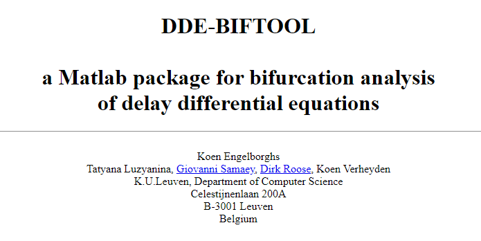
- Richer dynamics:
- oscillations (birth/death)
- multistability
- quasiperiodicity
- chaos ...
Dynamics on the Synch Manifold
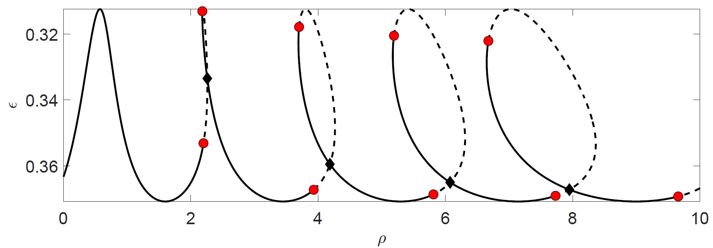
- The onset of synchronous oscillatory solutions
- Solid/dashed lines are super/sub-critical Hopfs
- Circles denote Bautin bifurcations and diamonds double Hopf bifurcations
- Bifurcation curves emenating from the higher-dimensional bifurcations include:
- saddle node of periodic orbits
- torus bifurcations
- period doubling
- This pattern repeats ...
- Increasing branch crossings ...
- Increasingly complex dynamics
1D Slices
To better understand the bifurcation plots from the previous slides we consider a selection of 1D slices
Chaotic Synchrony
Torus and period doubling bifurcations are often signs of chaotic behavior
We computed the maximal Lyapunov exponent as a function of the parameters $(\rho, \epsilon)$
Great dynamical systems resource including codes
Approximate the DDE
\[ \frac{\mathrm{d}x}{\mathrm{d}t} = F(x(t),x(t-\tau)) \]as \[ \begin{align*} x^{(0)}_{k+1} &= x^{(0)}_k + \tau F(x_k^{(0)},x_k^{(N)})/N\\ x^{(i)}_{k+1} &= x_k^{(i-1)} \quad\text{for}\quad 1\leq i\leq N \end{align*} \] Here, \[ x^{(i)}_k = x(t_k-i\Delta t) \quad\text{and} \tau = N\Delta t\]
This is know as the Euler map method
Else represent the DDE \[ \frac{\mathrm{d}x}{\mathrm{d}t} = F(x(t),x(t-\tau)) \]
as a system of $N+1$ ODEs \[ \begin{align*} \frac{\mathrm{d}x_0}{\mathrm{d}t} &= F(x_0,x_N)\\ \frac{\mathrm{d}x_i}{\mathrm{d}t} &= \frac{N\left(x_{i-1}-x_{i+1}\right)}{2T}\quad\text{for}\quad 1\leq i\leq N-1\\ \frac{\mathrm{d}x_N}{\mathrm{d}t}&= \frac{N\left(x_{N-1}-X_N\right)}{T} \end{align*} \]
Solve using standard methods such as RK4
We deployed the Euler map method to obtain:
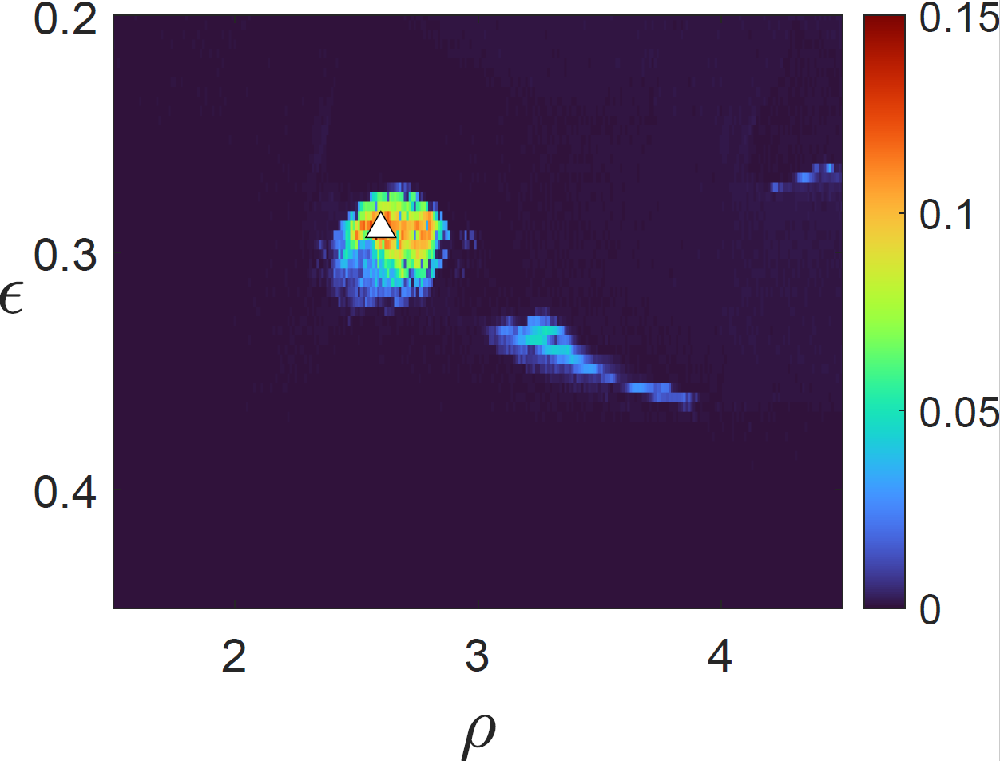 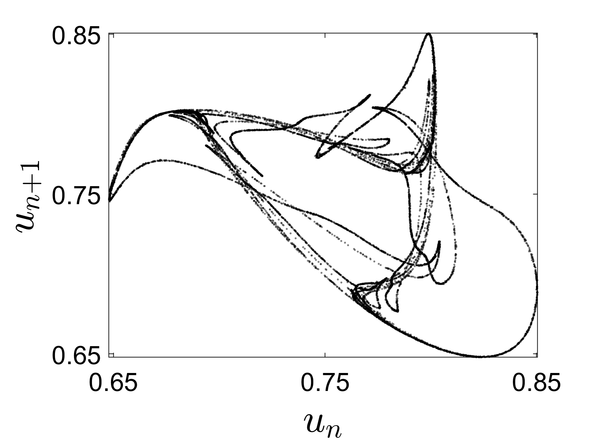- Poincare return map for \[(\rho, \epsilon) = (2.7,0.27)\]
- Evidence of a strange attractor
- How does chaos arise?
Interestingly the highlighted region sits between the torus bifurcation branches
$\epsilon$ parameter sweep of the maximum and minimum values of $u$
- Further evidence of chaotic dynamics observed for $\rho = 2.7$
- Numerical evidence suggest chaos arise from the breakdown of a torus
$\epsilon$ parameter sweep of the maximum and minimum values of $u$
- Quasiperiodic regime dynamics for $\rho = 2.9$
- Numerical evidence suggest chaos arise from the breakdown of a torus
- Return maps show the transition from a smooth ergodic torus to a resonant zone
Summary of the dynamics on the synch manifold
- Synchronous solutions do not coincide with the uncoupled dynamics, as is the case for the often studied diffusive coupling (master stability analysis etc.)
- Thus, both coupling strength and inter-nodal delay impact on sycnhronised solutions
- Branch crossings and higher-dimensional bifurcations lead to the emergence of multistable and/or irregular dynamics in large regions of parameter space
- Evidence for a torus breakdown route to chaos
Outline
- Introduction and Motivation
- A Brain Network Model
- Bifurcation Structure of the Synchronisation Manifold
- The Effect of Network Structure and Time Delay on Patterns of Synchrony
- Concluding Remarks and Future Work
Bifurcation Structure for a Ring of Neural Masses
To better understand the impact of network structure on the synchronous solutions studied thus far we considered a simple ring network architecture
With adjacency matrix given by
\[ A = \begin{pmatrix} 0&1&0&\cdots&1\\ 1&0&1&\ddots&\vdots\\ \vdots&\vdots&\ddots&\ddots&0\\ 0&0&\cdots&0&1\\ 1&0&\cdots&1&0 \end{pmatrix} \]In our experiments $n=6$ for computational ease
Stability of the homogeneous steady state
In the case of a ring network stability is governed by the following equation
\[ \mathrm{det} \left[ I_n\otimes\left( \lambda I_2 - A - Be^{-\lambda\tau}\right) - \left(K+K^{n-1}\right)\otimes \left(C_\epsilon e^{-\lambda\rho}\right)\right] = 0, \]where $A, B$ are the same as for the self-coupled node,
\[ C_\epsilon = \begin{pmatrix}\frac{1}{2}\epsilon\beta u^*(1-u^*)&0\\0&0\end{pmatrix}, \]and
\[ K = \begin{pmatrix} 0&1&0&\cdots&0\\ 0&0&\ddots&\ddots&\vdots\\ \vdots&\vdots&\ddots&\ddots&0\\ 0&0&\cdots&0&1\\ 1&0&\cdots&0&0 \end{pmatrix} \]is the basic circulant permutation matrix
- Due to the bock circulant structure of the above matrix, we can employ a discrete Fourier transform to diagonalise it,
leading to the following factorised from of the characteristic equation:
where $\displaystyle \phi_k = 2\pi k/n, k=1,\ldots, n$.
\[ \prod_{k=1}^n \mathrm{det}\left[\lambda I_2 - A - Be^{-\lambda \tau} - \left(e^{i\phi_k} + e^{i(n-1)\phi_k}\right)C_\epsilon e^{-\lambda \rho}\right] = 0, \]
- This equation can be solved numerically to determine the stability properties of the steady state solution of the full system as a function of the parameters $\rho$ and $\epsilon$
- Next we explore the bifurcation structure of a ring network on $n=6$ nodes
Dynamics on a Six Node Ring
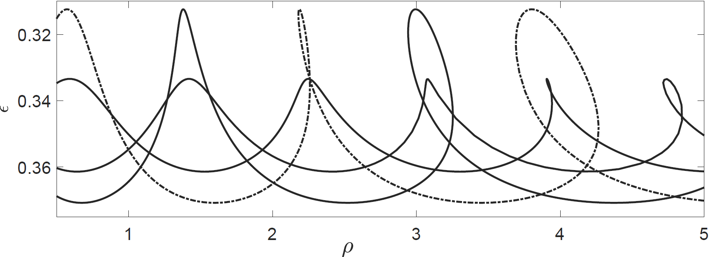
- The onset of oscillatory solutions
- Three additional asynchronous AH branches for a 6 node ring
- Solid/dashed lines are asynchronous/synchronous AH branches
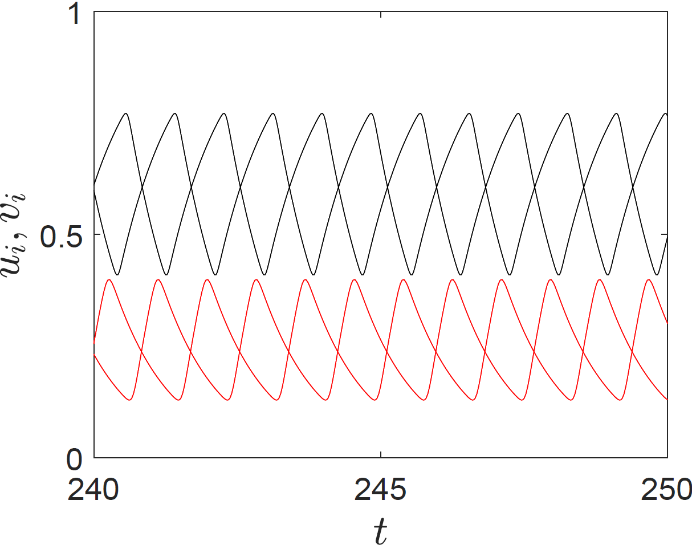 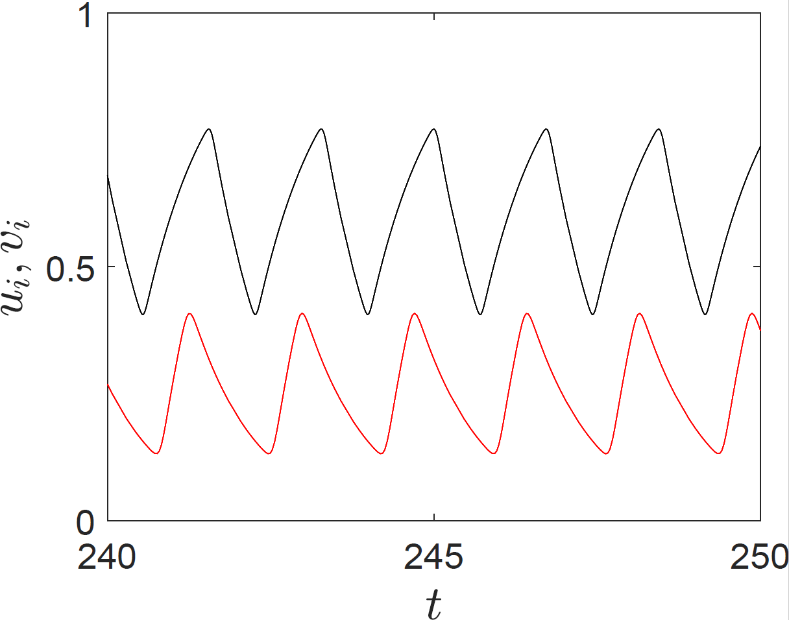
- Crossing the dashed/solid line results in asynchronous/synchronous solutions
- Black/Red lines denote excitable/inhibitory variables
- Close to the first AH crossing these are the only two observed behaviours
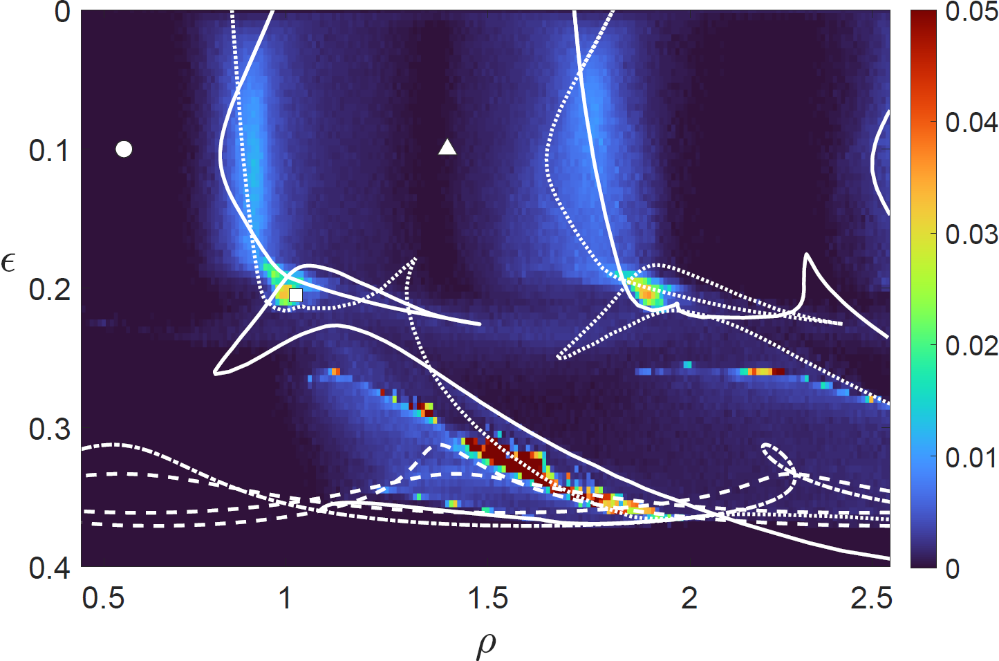
- Plot of maximal LE as a function of $(\rho, \epsilon)$
- Hopf branches superimposed
- Solid and dotted white lines denote torus branches
- Weak chaotic boundaries
Four different ICs for $(\rho, \epsilon) = (1.025, 0.205)$
Larger Network Structures
To investigate the dynamics for larger network structures we consider
Metastability
"Metastability is a fundamental concept to grasp the behavior of complex systems theoretically and empirically"
E Tognoli and JA Scott Kelso. The Metastable Brain, Neuron, 2014
Metastability is an important concept in neuroscience and is related to the concept of state (or attractor) switching, which naturally arises in noisy, multistable systems
Closely connected to idea of dynamic functional connectivity
The Kuramoto Order Parameter
- Global synchrony levels are quantified using the time-averaged Kuramoto order parameter
- And metastability is defined as the variance in $R$
- The instantaneous phase $\theta_i(t)$ is computed by applying the Hilbert transform and reading out the angle of the complex part
Toy network Structures
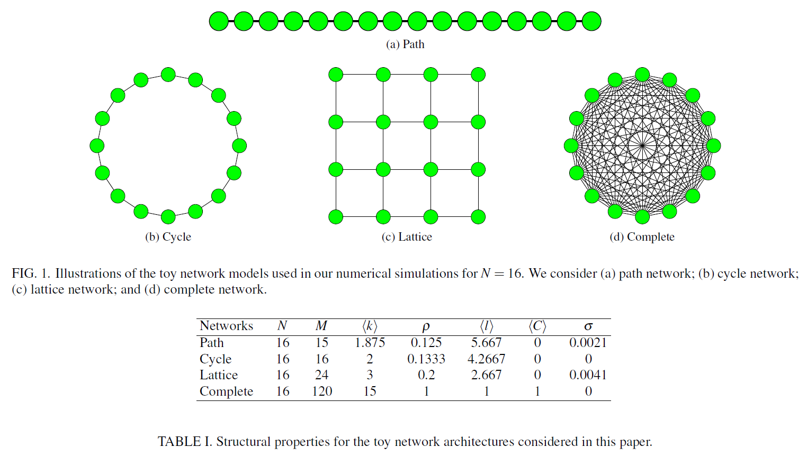Toy network Structures: Cycle Network
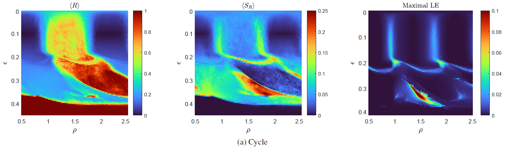- Weak chaotic boundaries separate different dynamic behaviours
- "Strong" chaotic island
- Figure to left is for $n=6$ and is for illustrative purposes

- For large coupling all networks are monostable
- For decreasing values of $\epsilon$ we observe one of two behaviours (initially):
- fixed points lose stability via a HB
- the system becomes bistable after crossing an SNPO branch
- Further reduction in $\epsilon$ results in increasingly complex behaviour - including chaos
- For small $\epsilon$ we generally see either synchronous or antiphase synchronous solutions
Brain Network Model
- Large areas of high synchrony and low variability
- Relatively high levels of synchrony and variation at criticality boundaries
- Regions of irregular chaotic dynamics
How does this compare against the toy network structures?
- The Macaque results most like the complete network with two main exceptions:
- chaotic dynamics are realised
- an island of heightened synchrony and variability is observed
- Network heterogeneity appears to induce some novel behaviours ...
temporal profile snapshot of phase
FC given by the mean phase coherence of the oscillators
Chaotic Nodes
To conclude we briefly address the question as to whether or not network dynamics can be regularised through a combination of coupling and delay
- F. Conti and R.A. Van Gorder, JTB 2019 recently reported that certain network structures have a regularising effect
- Does this result hold for cortical networks?
- We chose parameter values from the chaotic regime:
- Delays and coupling: $\tau=0.1, \rho=0.9$ and $\epsilon=0.34$
\[ a = d = -6, b = c = 2.5, P = Q = 0.2, \beta = 60 \]
- The correct balance between coupling and inter-nodal delay can induce order
- In the presence of network heterogeneity, coupling strength and inter-nodal may have a role to play in preventing the appearance and spread of irregular, asynchronous dynamics
Outline
- Introduction and Motivation
- A Brain Network Model
- Bifurcation Structure of the Synchronisation Manifold
- The Effect of Network Structure and Time Delay on Patterns of Synchrony
- Concluding Remarks and Future Work
Conclusions and Future Work
- To conclude
- hi
- hi
- hi
- apply our techniques to human brain networks that incorporate a large number of delays
- it would be interesting to compare metastabilty across different species
- consider the effect of network directionality on the results presented here
- consider distributed delays
In the future we aim to
Aknowledgements
Collaborators
& Thank You!
PHD student : Iain Pinder